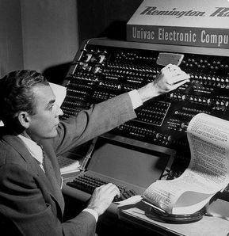

Sitio informativo sobre temas informáticos
Generaciónes de Computadoras: Primera Generación
Volver a Inicio
Generaciones de computadoras
Características
Tecnología:
Utilizaban válvulas de vacío para la construcción de circuitos.
Programación:
Se programaban en lenguaje máquina, lo que significaba que los programas eran escritos en código binario.
Almacenamiento:
La información se mostraba a través de bombillas, donde cada bombilla representaba un bit (1 encendida, 0 apagada).

Ejemplos de Computadoras
ENIAC
(1945): Considerada la primera computadora digital electrónica, ocupaba una gran sala y utilizaba 18,000 tubos de vacío.
UNIVAC I
(1951): La primera computadora comercial, utilizada por la Oficina del Censo de EE. UU.
IBM 701
(1952): La primera computadora de IBM, que utilizaba tarjetas perforadas para la entrada de datos.